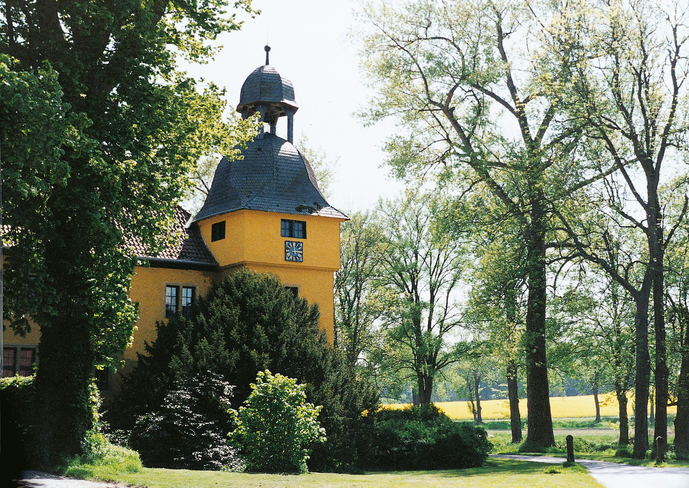

Gut Böckel
Latem roku 1917 do Böckel przyjechał na kilka tygodni Rainer Maria Rilke. Nie wyobrażałam sobie, by mógł zamieszkać w nowym skrzydle pałacu, pochodzącym z lat osiemdziesiątych, w komnatach dowolnej wysokości i rozmiarów. Dlatego urządziłam dla niego trzy pokoje w starej zamkowej wieży.
Niewielka sypialnia. Nie przeszkadzały mu rozbrzmiewające tam czasem o późnej porze pohukiwania sów. Tuż obok nieco większy pokój do posiłków i popołudniowego wypoczynku oraz drugi, najobszerniejszy, o głębokich okiennych niszach, do pracy. Niegdysiejszy ołtarzyk chrzcielny przerobiono na pulpit.
Na szczęście stary ogrodnik zasadził heliotrop, donice z kwiatami ustawiłam w obydwu oknach. Te niezwykłe ciemnoliliowe rośliny o oszałamiającym zapachu wanilii lubił Rilke najbardziej.
Nie miałam pewności, czy ten subtelny, wrażliwy człowiek, zdławiony przygnębieniem przedostatniego roku wojny, znajdzie w naszym majątku ukojenie.
— Hertha Koenig Moje wspomnienia o Rainerze Marii Rilkem
Stara zamkowa wieża w Gut Böckel, w której gościł Rilke latem roku 1917.